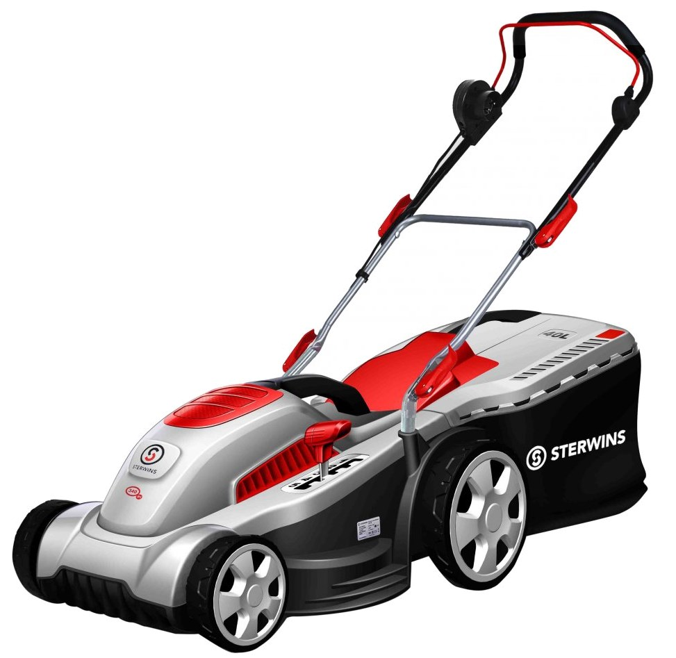

Sterwins 340 EP
El Sterwins 340 EP es un cortacésped eléctrico con un ancho de corte de 34 cm y una potencia de 1200 W, ideal para jardines pequeños y medianos. Este modelo ofrece un rendimiento constante y eficiente, facilitando el mantenimiento de tu jardín con comodidad.
El sistema de ajuste de altura de corte de 6 posiciones permite adaptar el corte a tus necesidades específicas, con alturas de corte entre 20 y 70 mm. La bolsa de recolección de 35 litros garantiza un jardín limpio y ordenado, mientras que su diseño compacto y ligero facilita la maniobrabilidad y el transporte.
No esperes más y adquiere tu Sterwins 340 EP para mantener tu jardín en perfectas condiciones.
Compra ahora